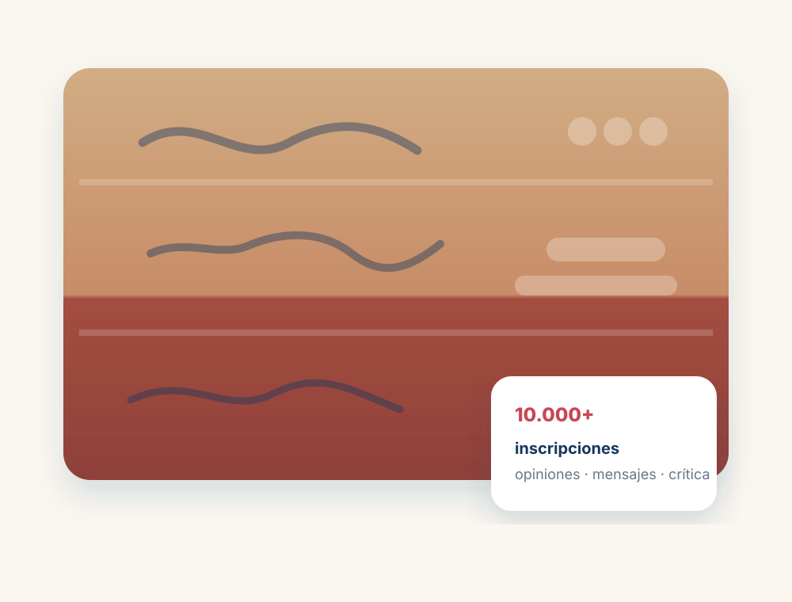
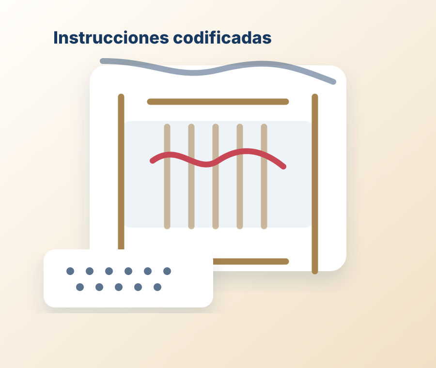

Autoridades de control · CEPD
Autoridades de control y Comité Europeo de Protección de Datos
Un recorrido desde los primeros registros de población hasta la supervisión independiente del tratamiento de datos.


Recorrido
Historia · automatización · garantías · control